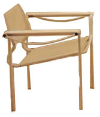
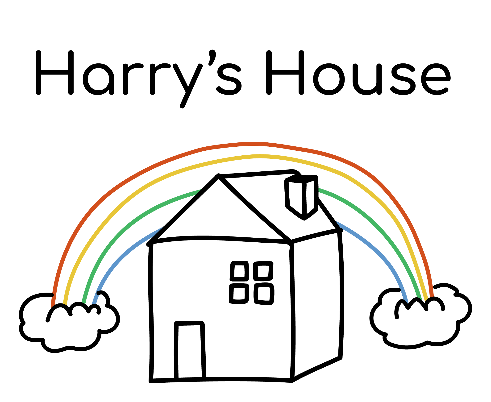

Album by: Harry Style, 2022
Graphic designer: Bradley Pinkerton
Photography: Hanna Moon
This cover is nice. I like his outfit, it's cute! Putting the hous up side down is ofcourse what's makes the cover interessting. Also having a more 70's and Bauhaus design feel to the interior design is also very nice and fits perfectly with the font (Trooper Jazzerini) that Pinkerton choose. I love that couch, I want it in my home.
In terms of colour, Bradley opted predominantly for yellows and oranges, for their “warm and secure feeling”,
while pops of blue invoke the feeling of “searching and longing”. The typographic route, however, proved tricker.
Bradley was intent on using the font Trooper Jazzerin
Pinkerton also designd som really nice merch for this album. The ones futuring the house is my favorite ones. I think it's simple and cute but also gives a fun and kid-like feeling which I love.
Link to his Instagram Link to StudioHELLO



Now playing: Harry's House